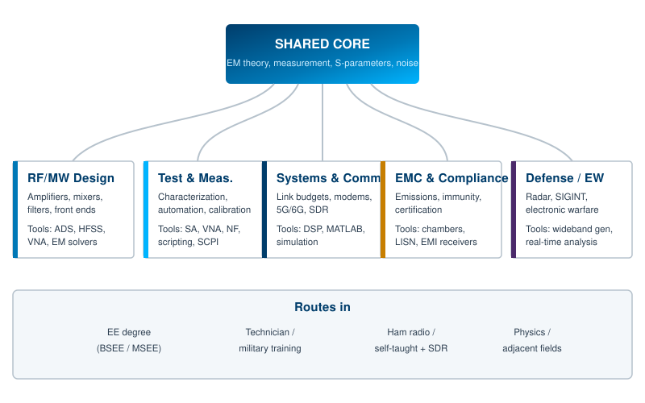
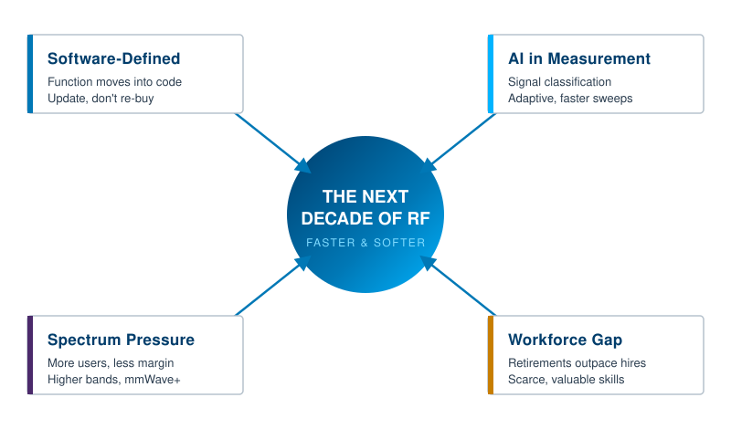

This book opened with a simple claim: radio frequency stopped being a quiet specialty and became one of the most contested resources of the decade. Everything between that first chapter and this last one has been about the craft of measuring RF well, because measurement is where the contested part gets resolved. This closing chapter steps back from the bench and looks at the people who do this work, the institutions that write the rules, and the technologies that are reshaping how the work gets done. It is a forward-looking chapter, less about how to take a reading and more about why the field matters now and where it is heading next.
If you have read this far, you already have the technical foundation. The goal here is to put that foundation in context: what kind of career RF supports, how to keep up with standards that never stop moving, and which forces will define the next ten years of the discipline.
RF and microwave engineering is one of those fields that almost never goes quiet. The demand spans telecom, defense, aerospace, satellite, medical devices, automotive radar, and the broad sweep of the Internet of Things. As long as the spectrum stays crowded and valuable, the people who can design for it and measure it stay in demand. Surveys of hiring managers bear this out. Roughly a third of organizations report difficulty filling RF engineering roles specifically, and a much larger share, near three quarters, report trouble finding qualified candidates for engineering positions in general. [1] Verify before publication.
The shortage is partly structural. The senior engineers who learned RF in the era of discrete designs and manual benches are retiring faster than new graduates arrive to replace them. One way the talent gap gets described is a replacement ratio: for every several senior engineers leaving the field, only one or two new entrants come in with comparable depth. [2] Verify before publication. RF is also genuinely hard to learn. It blends electromagnetic theory, circuit design, signal processing, and a stubborn layer of physical intuition that does not transfer cleanly from digital or software work. A trace on a board stops being a wire and starts being a transmission line. A connector becomes an impedance. That shift in thinking takes time, and it is exactly the shift this book has tried to build.

The shared core. Whatever path an RF career takes, the same foundation sits underneath it. Electromagnetic theory, the behavior of transmission lines, scattering parameters, the language of noise and gain, and above all the discipline of measurement. Employers consistently list hands-on fluency with the core instruments as a baseline expectation: vector network analyzers, spectrum analyzers, signal generators, and noise figure measurement, plus simulation tools such as ADS and HFSS for design roles. [3] Verify before publication. None of that is exotic. It is the material of the preceding chapters, and it is what makes a candidate immediately useful.
The branches. From that core, the field fans out. RF and microwave design builds the amplifiers, mixers, filters, and front ends. Test and measurement characterizes and automates, increasingly with scripting and remote control rather than knob-twisting. Systems and communications work covers link budgets, modems, 5G and 6G air interfaces, and software-defined radio. EMC and compliance, the subject of an earlier chapter, keeps products legal and well behaved. Defense and electronic warfare push into radar, signals intelligence, and the widest, fastest, most agile corners of the spectrum. The boundaries blur in practice, and the most valuable engineers tend to be the ones who can move between them.
The routes in. There is no single door. The traditional path is an electrical engineering degree, often with a graduate specialization in fields, microwaves, or communications. But the field has always welcomed technicians who moved up through hands-on work, military-trained operators who learned RF on real systems, and self-taught practitioners who came in through amateur radio and, more recently, low-cost software-defined radio hardware. That last route matters more every year, because an inexpensive SDR and a laptop now put real spectrum on a hobbyist's desk. Salaries reflect the scarcity. Compensation for experienced RF engineers with specialized skills, such as satellite and microwave work, sits comfortably above the broader engineering median, and the highest-paying niches in defense and millimeter-wave design pay more still. [4] Verify before publication.
For anyone deciding whether to invest in this skill set, the honest summary is this: the work is hard, the demand is durable, and the people who can measure RF precisely keep winning. That was the argument in Chapter 1, framed as a market force. Here it is again, framed as a career.
RF does not work without agreement. Two radios can only talk if they share a definition of the channel, the modulation, the timing, and the limits. Two products can only coexist if they respect the same emission rules. That agreement is the job of standards bodies, and an RF professional who cannot navigate them is working with one hand tied. The trouble is that there are many of them, their scopes overlap, and they revise constantly. The goal of this section is not to memorize the catalog. It is to build a mental map of who owns what, so you know where to look when a question comes up.
IEEE. The Institute of Electrical and Electronics Engineers publishes the technical standards that define how a great deal of wireless actually works. The 802.11 family is Wi-Fi, 802.15 covers personal-area networks including the basis for technologies like Zigbee, and many measurement and component standards live here too. IEEE is also where much of the peer-reviewed RF and microwave literature is published, so it serves as both a standards body and a knowledge base.
ITU. The International Telecommunication Union is the United Nations agency that coordinates the global use of the radio spectrum. Its World Radiocommunication Conferences, held every few years, allocate frequency bands to services on a worldwide basis. When people talk about which bands are available for 5G or satellite, the ITU allocation is the starting point that national regulators then implement. The ITU also defines the broad performance targets that generations of mobile technology must meet, the framework under which 5G and the coming 6G are evaluated.
3GPP. The 3rd Generation Partnership Project is the body that actually writes the cellular specifications: 4G LTE, 5G NR, and now the foundations of 6G. Its work is organized into numbered Releases. Release 18 introduced what the industry calls 5G-Advanced. Release 19 has been frozen, with its specifications complete, and Release 20 began around the middle of 2025 in a dual role, both extending 5G-Advanced and opening the formal study phase for 6G. [5] Verify before publication. The first full normative 6G specifications are expected to land in Release 21, with industry timelines pointing toward 6G specifications being ready near the end of the decade and first commercial systems around 2030. [6] Verify before publication. If you work anywhere near cellular, the 3GPP Release number is the single most useful coordinate for knowing where the technology stands.
ETSI. The European Telecommunications Standards Institute is a 3GPP organizational partner and the body that turns many global specifications into the European regulatory framework. It also owns standards in its own right, from short-range devices to emerging areas. For anyone selling into Europe, ETSI harmonized standards are part of the path to market.
CISPR and the FCC. These two govern the other side of RF, the emissions and immunity rules covered in the EMC chapter. CISPR, the International Special Committee on Radio Interference, is a committee of the International Electrotechnical Commission and publishes the test methods most of the world uses for commercial product EMC. The FCC, through Title 47 Part 15 of the US Code of Federal Regulations, sets the rules for radio-frequency devices in the United States and leans heavily on CISPR methods. Knowing that the FCC borrows CISPR's methods is what lets precompliance work done to one translate to the other.
How to track them. The practical skill is not knowing every document. It is knowing the map, then watching the few sources that matter for your work. Follow the Release cadence if you are in cellular. Watch the World Radiocommunication Conference outcomes if spectrum allocation affects you. Subscribe to the change notices for the specific CISPR or FCC or MIL-STD documents your products must meet. Standards are living documents, and the numbers, limits, and methods in this book are orientation, not gospel. Always confirm against the current published version before you rely on a specific figure.
The single biggest shift in how RF gets built and tested is the move of function out of fixed hardware and into software. A software-defined radio puts the antenna, a wide front end, and a fast converter close to the air, then does the rest, the filtering, the demodulation, the protocol, in code running on a processor or an FPGA. The same radio can be a Wi-Fi receiver one minute and a cellular monitor the next, changed by a software load rather than a new board. The idea is decades old, but cheap, fast data converters and powerful processing finally made it mainstream.
The consequences for the field are large. A single SDR platform can stand in for a shelf of single-purpose receivers. Prototyping a new waveform no longer requires new silicon, just new code, which is exactly why software-defined instruments are in heavy demand for early 6G research, where engineers are still exploring new air interfaces, AI-driven radios, and intelligent reflective surfaces. [7] Verify before publication. The flexibility also changed the test problem: as software-defined radios get deployed everywhere, the instruments that test them have had to become more flexible in turn.
That same logic has reshaped test and measurement itself. The industry has shifted markedly toward software-defined instrumentation, where capability arrives as a software update rather than a hardware replacement. [8] Verify before publication. A spectrum analyzer or signal generator built on a software-defined platform can gain new measurement modes, new standards support, and new analysis features over its life without the customer buying a new box. For a lab on a budget, that changes the economics of keeping current. The broader RF test equipment market reflects the momentum: it was valued near 1.84 billion dollars in 2024 and is projected to grow past 2.7 billion dollars by 2032, with software-defined platforms, AI-powered automation, and over-the-air testing named among the leading trends. [9] Verify before publication.
The lesson for an RF career is that software fluency is no longer optional. The engineer who can script an instrument, process a captured signal, and reason about a waveform in code has leverage that the pure hardware specialist does not. The bench is still real, the physics is still unforgiving, but more and more of the work happens in software wrapped around that physics.

If software-defined instruments are the platform, artificial intelligence is increasingly the layer running on top. The most immediate application is signal identification. A crowded spectrum capture can contain overlapping LTE, 5G NR, Wi-Fi, and Bluetooth, and sorting them by hand is slow and error-prone. Machine-learning models trained to recognize wireless standards now do this automatically. Keysight, for example, has fielded a machine-learning model on its handheld platform that identifies wireless standards including LTE, 5G NR, Wi-Fi, and Bluetooth, and Anritsu has integrated DeepSig's AI software with a field spectrum analyzer to provide AI-assisted signal detection and classification. [10] Verify before publication. The payoff is practical: automatic classification lets an engineer trace an interference path faster and spend time on root cause rather than on identifying what is even there.
The second application is automation of the measurement itself. Adaptive test systems are starting to use machine-learning agents that adjust instrument settings during a test run, reaching coverage targets in fewer iterations than a fixed script would. [11] Verify before publication. Some measurement instruments now include AI modules trained on historical measurements that can set themselves up, reducing the time to a good reading. The direction is clear. Routine setup, routine classification, and routine first-pass analysis are moving toward automation, which frees the engineer for the parts that still need judgment.
It is worth being precise about what AI changes and what it does not. AI is very good at pattern recognition across large volumes of measurement data, at flagging anomalies, and at handling the tedious classification work that used to eat hours. It does not repeal physics. It does not know why an amplifier is compressing or why a board is leaking through a seam. The skilled engineer remains the one who interprets the automated result, validates it against the physics, and decides what to do. The right way to read this trend is not as a replacement for RF expertise but as a multiplier on it. The engineer who pairs deep measurement understanding with fluency in these tools will get far more done than either the tool or the engineer alone.
This is the same handoff that runs through every field touched by automation. The machine takes the volume and the repetition. The human keeps the judgment and the responsibility. For RF, where a wrong conclusion can mean a failed compliance test, an interference complaint, or a mission failure, that division of labor matters.
Pull the threads together and the next decade of RF comes into focus. Figure 14.2 lays out the four forces. They reinforce each other, and none of them is slowing down.
Spectrum pressure keeps rising. More devices, more services, and more traffic compete for the same finite resource, pushing designs into higher and harder bands. Millimeter-wave is already in service, and the bands above it are under active study for 6G. Higher frequencies mean shorter wavelengths, narrower beams, more front ends, and tighter measurement tolerances. The contested-resource argument from Chapter 1 only intensifies.
Software-defined everything becomes the default. Radios and instruments alike keep moving function into code. The advantage goes to whoever can update rather than replace, and to whoever can prototype a new waveform in software while a competitor waits on hardware.
AI moves from novelty to infrastructure. Signal classification, adaptive test, and automated setup are early examples. Over the next decade these capabilities will become ordinary features of mainstream instruments rather than headline differentiators, the way automatic measurement features became standard before them.
The workforce gap stays open. Demand is durable, the skills are hard to build, and retirements outpace replacements. That is uncomfortable for employers and very good for the engineers who have the skills. Scarcity plus value is the condition that rewards expertise, and RF measurement expertise sits right at that intersection.
The through-line of this entire book has been that measurement is the discipline that turns RF from a mystery into an engineering problem you can solve. That was true when the spectrum was quieter, and it is more true now that it is crowded, software-defined, and increasingly mediated by AI. The tools will keep changing. The physics will not. An engineer who understands what a measurement actually means, and why, will stay valuable no matter how the instruments evolve around them.
That is where the field is going, and it is why now is a good time to be the person who can measure it.
BNC in Practice - The reader companion and a free print copy
This closes the technical journey, but not the resources around it. Berkeley Nucleonics maintains a reader companion for this book, with quick-reference material, the interactive quizzes, and a way to talk through a measurement problem with an engineer who works on these instruments daily. If a printed copy on the bench would serve you better than a screen, you can request a free print edition through the reader companion. Use what you have learned, keep measuring carefully, and come back to the reference whenever the spectrum throws something new at you.
Take it interactively. The quiz lives on its own page with hidden answers - write your attempt first (even four characters works), then reveal. Self-graded. About 10 minutes.
Or read the questions and answers inline below (preserved for print and offline use).
[1] Surveys reporting difficulty filling RF engineering roles (about one third) and engineering roles generally (about three quarters). Verify before publication.
[2] Structural replacement-ratio framing for the RF/electrical engineering talent gap (senior retirements outpacing new entrants). Verify before publication.
[3] Commonly listed baseline RF skills and tools in job postings: VNA, spectrum analyzer, signal generator, noise figure, ADS, HFSS. Verify before publication.
[4] Representative compensation for experienced RF engineers with specialized (satellite/microwave) skills, above the broader engineering median. Verify before publication.
[5] 3GPP Release status: Release 18 (5G-Advanced), Release 19 frozen, Release 20 began mid-2025 with dual 5G-Advanced and 6G study role. Verify before publication.
[6] 6G timeline: first normative 6G specifications expected in Release 21, specifications near end of decade, first commercial systems around 2030. Verify before publication.
[7] Demand for software-defined instruments in early 6G research (new air interfaces, AI-driven radios, intelligent reflective surfaces). Verify before publication.
[8] Industry shift toward software-defined instrumentation, capability via software update rather than hardware replacement. Verify before publication.
[9] RF test equipment market size (approximately 1.84 billion USD in 2024, projected past 2.7 billion USD by 2032) and leading trends. Verify before publication.
[10] AI signal classification examples: Keysight handheld ML model (LTE, 5G NR, Wi-Fi, Bluetooth) and Anritsu/DeepSig spectrum analyzer integration. Verify before publication.
[11] Adaptive test systems using machine-learning agents to adjust instrument settings and reach coverage targets in fewer iterations. Verify before publication.